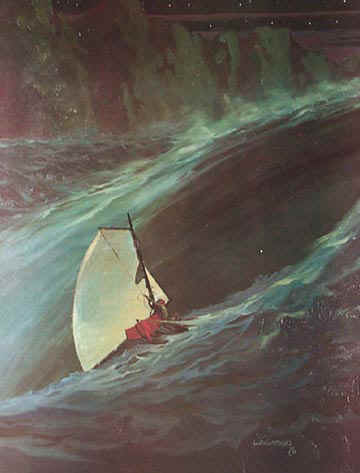

Poe's Maelstrom
Descending into the maelstrom, Poe's sailor observed, in a moment of Zen detachment, an interesting pattern—that heavy objects plunged downward and light objects ascended in the maelstrom, so he abandoned his boat and swam to safety.
I must have been delirious—for I even sought amusement in speculating upon the relative velocities of their several descents toward the foam below. 'This fir tree,' I found myself at one time saying, 'will certainly be the next thing that takes the awful plunge and disappears,' —and then I was disappointed to find that the wreck of a Dutch merchant ship overtook it and went down before. At length, after making several guesses of this nature, and being deceived in all—this fact—the fact of my invariable miscalculation, set me upon a train of reflection that made my limbs again tremble, and my heart beat heavily once more. —Edgar Allen Poe, Descent into the Maelstrom
 |
Descent into the Maelstrom |
To summarize the sailor’s miraculous escape from the maelstrom: he perceives the curious counter-intuitive fact that the larger objects are descending and that the smaller objects are ascending. So he abandons the safety of his boat and rises from the whirlpool to live another day. McLuhan’s point is that in an emergency if we find a quiet place in consciousness to observe, and cooperate with, the action of the maelstrom, or whatever laws rule the predicament in which we find ourselves, and resort to problem-solving, we can rise above, and triumph over, every human crisis; that is, we can realize Bacon's dream of ‘effecting of all things possible’ by understanding ‘the secret motions of things.’
McLuhan's idea is reminiscent of Stein's advice to Jim in Joseph Conrad's Lord Jim. Says Stein:
A man that is born falls into a dream like a man who falls into the sea. If he tries to climb out into the air as inexperienced people endeavor to do, he drowns—nicht wahr?…. No! I tell you! The way is to the destructive element submit yourself, and with the exertions of your hand and feet in the water make the deep, deep sea keep you up.
Conrad says a man is born into a dream, the dream of a perfect world ruled by truth, beauty and goodness, but he grows up to learn that these ideals are only a desideratum, and that in the real world, life is nasty, brutish and short. How does he cope? Using the metaphor of the sea, Stein observes that unskilled swimmers typically try to escape the water by clawing at the air, thrashing until they become exhausted and drown. A sensible swimmer does not try to escape the water, but cooperates with the laws of buoyancy, i.e. he learns to tread water. He stops clawing for purchase in the world of ideals (like an angel in a vacuum) and submits himself to the hazards of life.